Blotter Office comparison
Play the office · Replay steps
Clean layout reference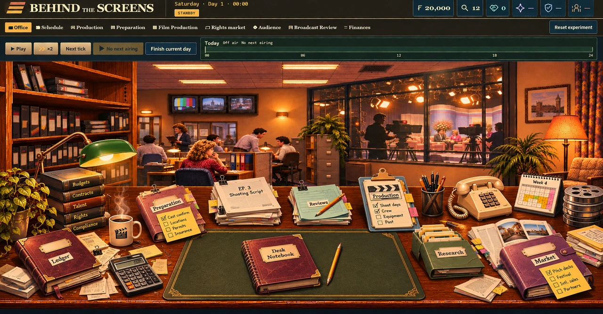
Atmosphere reference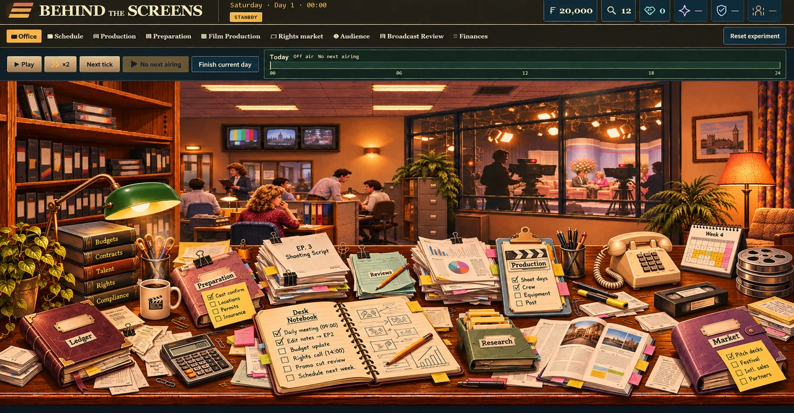
Before at 1280 × 900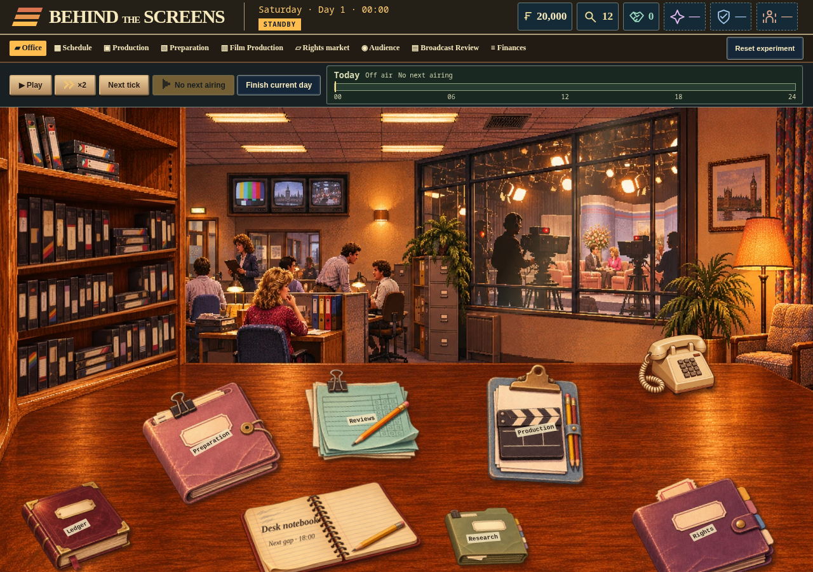
Before the prop perspective correction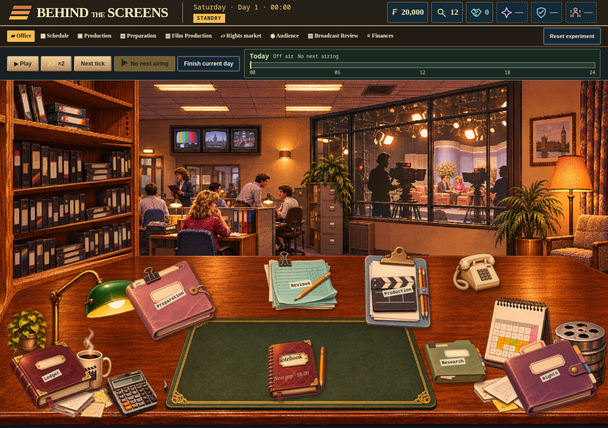
Blotter layout at 1280 × 900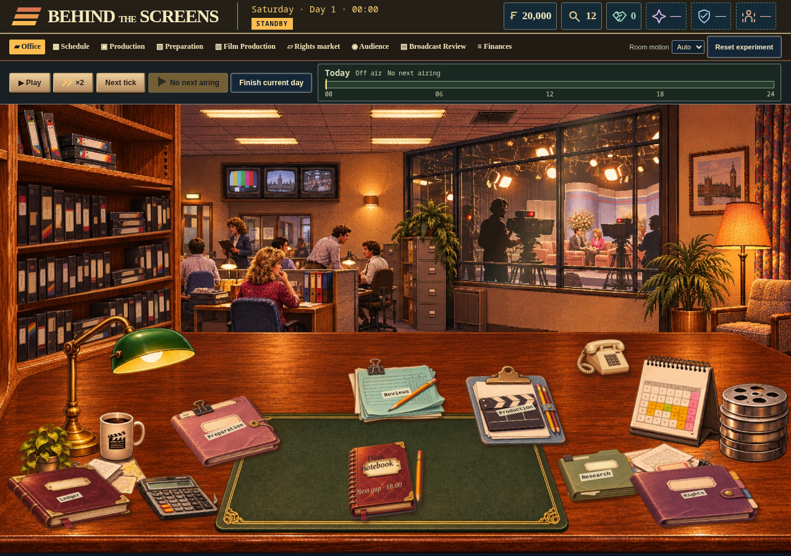
Handset lifted at the same scale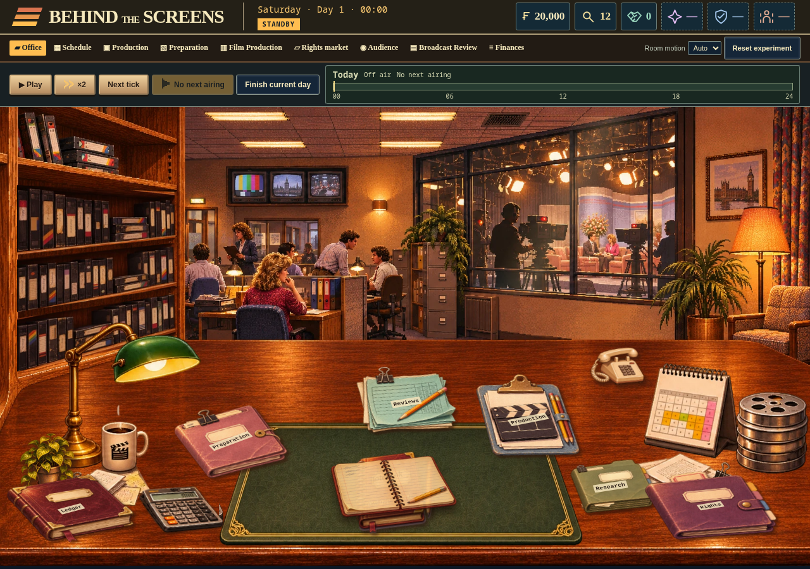
Research binder moves to the blotter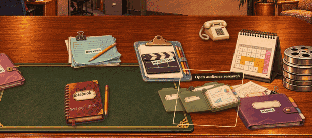
Idle motion with the game clock stopped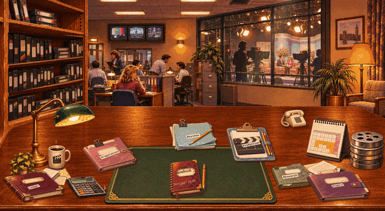
Idle studio movement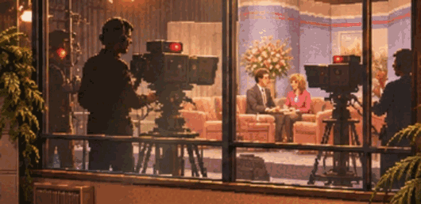
Research open over the office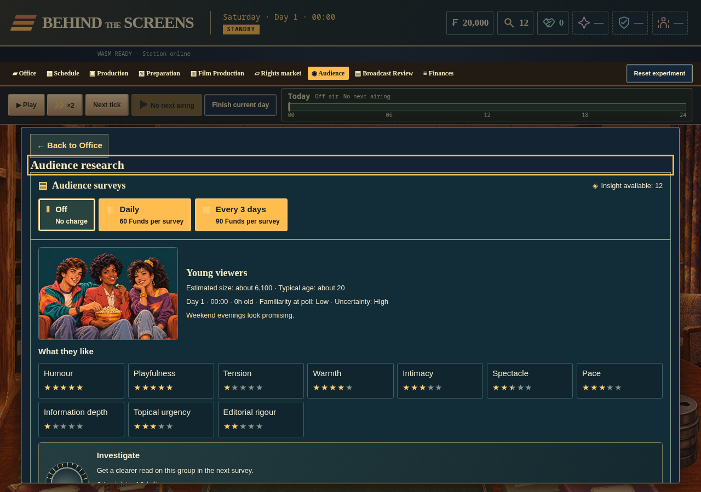
Before at 390 × 844 Rebuilt narrow office
Rebuilt narrow office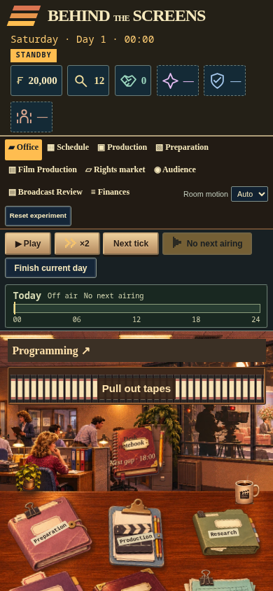
Research opened on touch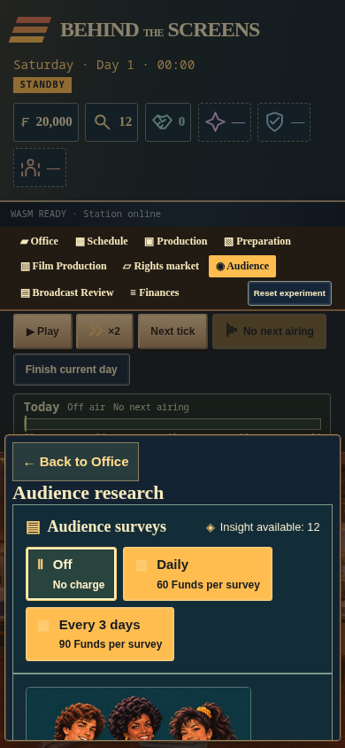